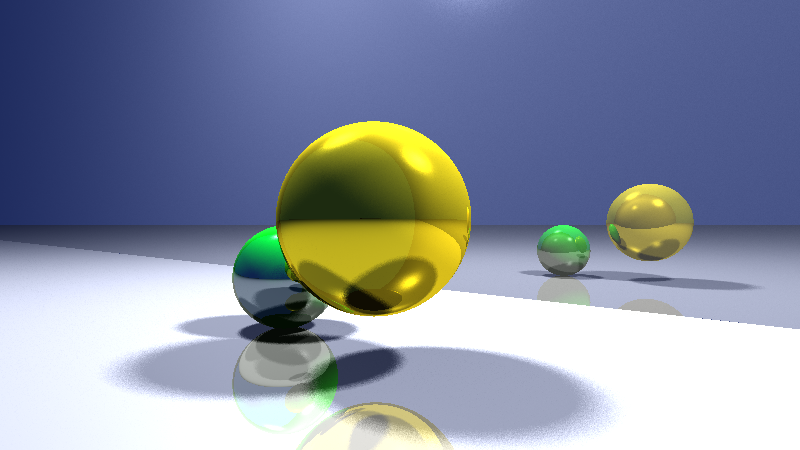

Depth-of-field and soft shadows
Table of Contents
About
Distribution Ray Tracing is a technique that involves shooting multiple random rays from each pixel and computing their average. Unlike conventional ray tracing techniques such as Whitted Ray Tracing, which trace a single ray per pixel and employ only one reflection, refraction, and shadow ray.
By using Distribution Ray Tracing, the following were implemented:
- Anti-aliasing
- Soft shadows by distributing shadow rays over the light source
- Depth-of-field effect by tracing rays from a lens to a plane of focus
Whitted ray tracing (left) vs with depth-of-field effect (right):
Whitted ray tracing (left) vs with soft shadows (right):
With both depth-of-field effect and soft shadows:
Installation
Do note:
- This project was written as a Shadertoy GLSL fragment shader and can be run here.
- This was a school assignment and part of the code was provided as a template by the course.
The code and instructions for installation are located on GitHub at https://github.com/clarlzx/DistributionRayTracing.
Credits
NUS CS4247 Teaching Team